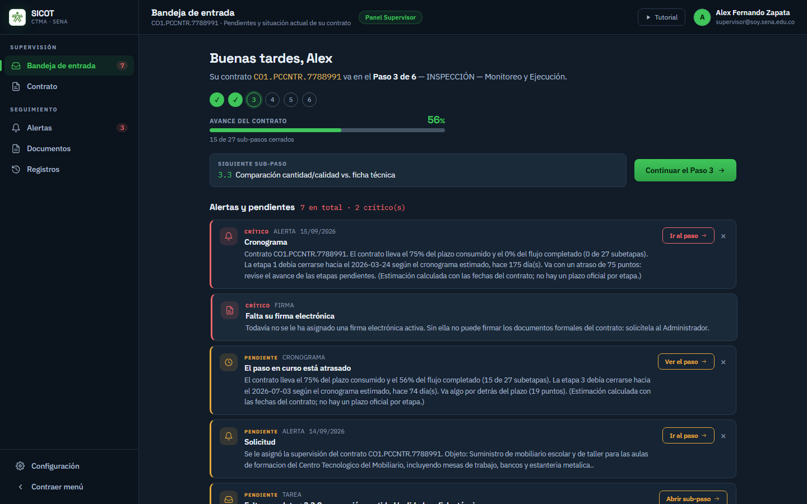
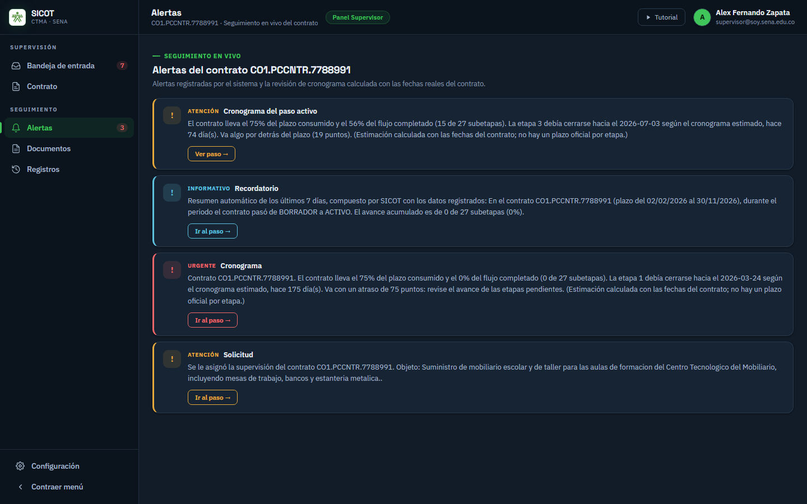
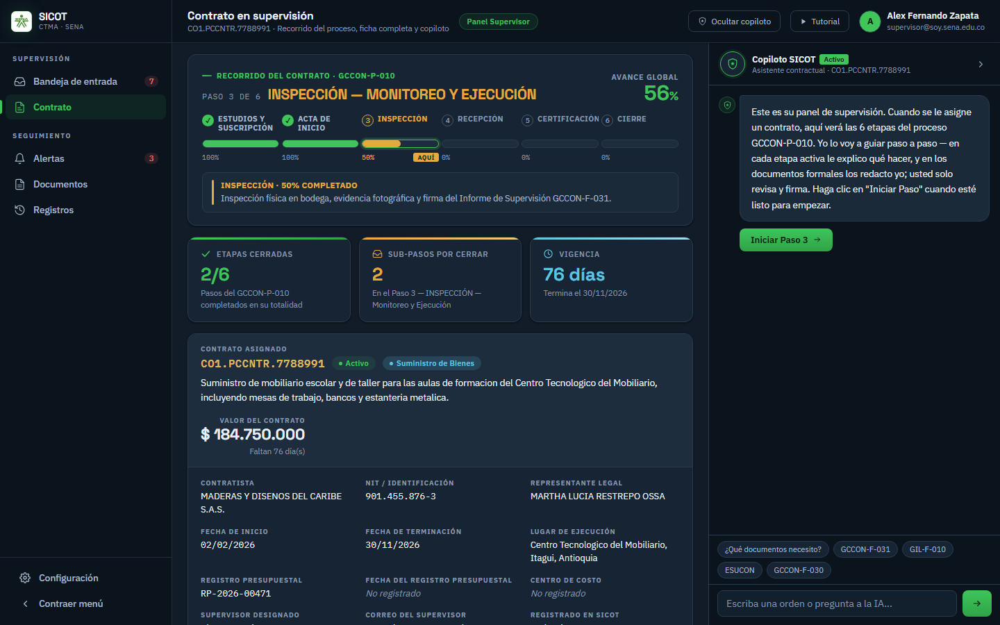
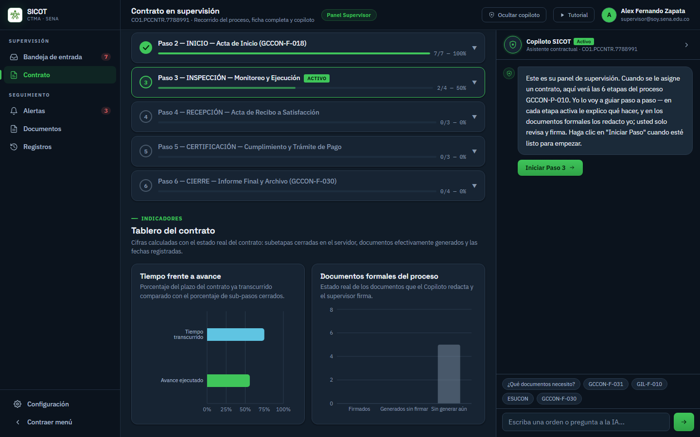
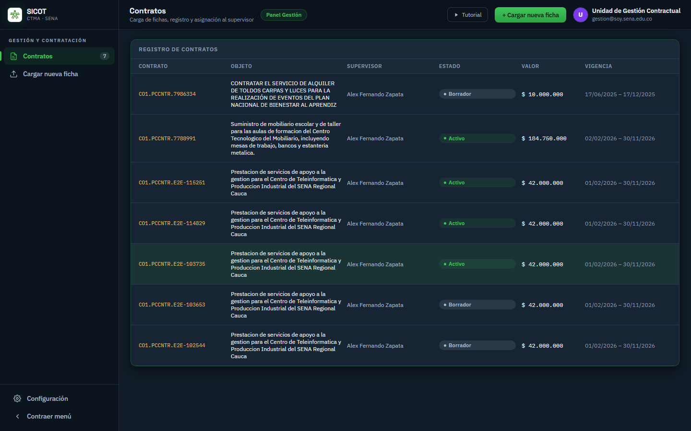
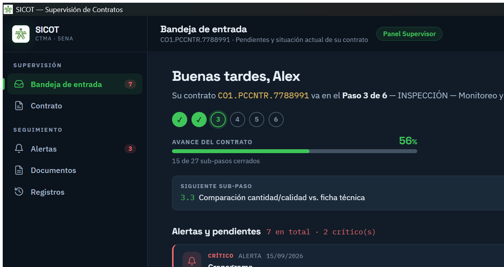
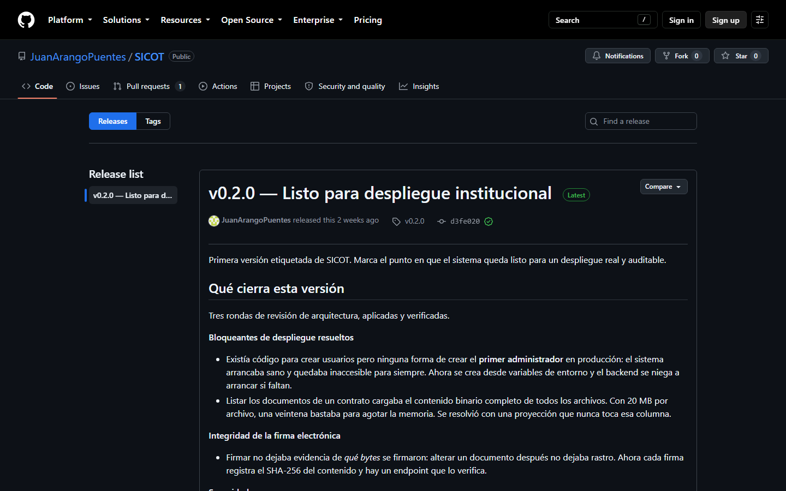

245 archivos modificados · 21.149 líneas añadidas en el periodo.
SICOT funciona de punta a punta con los tres roles reales del proceso —Gestión, Supervisor y Administrador— sobre el procedimiento GCCON-P-010 completo: sus 6 etapas y 27 sub-pasos, con el avance calculado por el servidor y no simulado en pantalla.
El sistema ya no es una maqueta: un supervisor entra, ve el contrato que le asignaron, sabe en qué paso va, qué le falta y qué está atrasado, y el sistema le avisa solo sin que nadie tenga que acordarse de mirar.

Un recorrido completo de 50 segundos, grabado contra el sistema real y no montado: se inicia sesión como supervisor, se recorre su bandeja, el contrato con sus barras de avance, se le pregunta al copiloto y se revisan las alertas y los documentos. Todo lo que aparece en pantalla son los datos reales del contrato.
Es el avance más importante del periodo. Antes, nada en el sistema creaba nunca una alerta: la tabla existía desde la primera versión de la base de datos y no había una sola línea que insertara una fila. Lo único que avisaba era un semáforo en pantalla, que estaba en rojo solo mientras alguien lo estuviera mirando. No quedaba constancia de cuándo se puso en rojo ni de si alguien lo vio.
Hoy el sistema vigila los contratos solo, todos los días, y deja la alerta escrita en el expediente con su fecha. Hay seis reglas en funcionamiento:
| Regla | Qué detecta |
|---|---|
| vencimiento-proximo | Quedan 30, 15 o 7 días de plazo |
| contrato-vencido | Pasó la fecha de fin y el contrato sigue activo |
| cronograma-atrasado | Brecha entre el plazo consumido y el avance real |
| supervisor-asignado | Avisa al supervisor recién designado |
| integridad-comprometida | Un documento firmado cuyo contenido ya no coincide |
| resumen-semanal | Resumen del periodo con los datos registrados |
Se forzó una pasada completa del calendario contra la base de datos real y se observó la cola de principio a fin:

Se evaluó formalmente usar n8n, la herramienta externa de automatizaciones, y se verificó que el motor propio encaja mejor con este proyecto. La decisión quedó documentada con su razonamiento. Los tres motivos que pesaron:
El único argumento real a favor de una herramienta visual sería que personal no técnico editara las reglas sin desplegar. Hoy no aplica, y los valores que más se tocarían —los días de aviso previo— ya son configurables sin tocar código.
El copiloto cumple dos funciones distintas, las dos con un modelo que corre en la máquina del Centro: sin cuenta, sin costo por consulta y sin límite de uso.
El hallazgo más útil del periodo fue que a la IA no hay que pedirle lo que el sistema ya sabe calcular. La pregunta más frecuente del supervisor —«¿en qué paso voy y qué me falta?»— se responde con el estado real de las etapas, sin pasar por el modelo: tarda 1 segundo en lugar de minutos, y es correcta por construcción porque la compone el mismo código que lleva la cuenta de los sub-pasos.
Esa vía se reforzó hoy mismo. Al probar el sistema se detectó que una variante tan natural como «¿qué me falta?» no entraba por ella y acababa contestándola el modelo, que en esa prueba señaló una etapa equivocada. Ya está corregido y con una prueba automática que lo fija: hoy la pregunta se responde con el paso correcto y sus sub-pasos reales. Al modelo le quedan solo las preguntas abiertas, que es donde sí aporta.

Atendiendo la indicación de hacerlo más simple conservando lo esencial, se revisó el panel con un contrato real delante. Lo que lo hacía denso no era la cantidad de información: era que la misma información salía varias veces —el avance global aparecía dos veces y el avance por etapa hasta tres, cada vez con una forma distinta.
Se retiraron las repeticiones, no el contenido. Todas las barras y todos los porcentajes siguen ahí, cada uno una sola vez, y se sumó la barra de avance a la pantalla de entrada, que es donde «¿cómo voy?» debe responderse sin hacer ni un clic.

La Unidad de Gestión Contractual registra las fichas, las asigna a un supervisor y sigue su estado. La carga puede hacerse a mano o partiendo del PDF, que el copiloto lee para proponer los campos.

Buena parte del periodo se dedicó a que el sistema sea sostenible los próximos años y no solo a que funcione hoy:
Gestión y Administración usan SICOT de forma remota, pero el supervisor necesita la aplicación instalada en su equipo. Hoy quedó construida: se empaquetó sobre la misma base de código que ya existe, sin duplicarla, y genera los dos instaladores de Windows habituales.
El supervisor obtiene un icono del SENA en su escritorio y una ventana propia, con la aplicación completa dentro. No es un navegador con SICOT abierto: es una aplicación instalada.

Ninguno de los dos se ve desde el navegador, y los dos dejaban la aplicación inservible para un supervisor. Aparecieron al abrirla e intentar entrar de verdad:
El instalador no lleva la dirección del servidor dentro, y esa fue la decisión de diseño del día. Si la llevara, el ejecutable que descarga un supervisor apuntaría para siempre a un servidor concreto, y mover el servidor obligaría a recompilar y volver a publicar el instalador para todo el mundo. La dirección se guarda en cada equipo y se cambia desde Configuración → Servidor, así que un mismo instalador sirve para cualquier despliegue.
Los instaladores se publican como GitHub Releases del propio repositorio, no como una página de descargas. El motivo es la trazabilidad institucional: hay que poder responder «¿qué versión tiene instalada este supervisor?» y poder revertir una entrega defectuosa. Releases lo resuelve de forma nativa —cada versión con su etiqueta, su fecha y sus notas de cambios— y es gratuito. El mecanismo ya está en uso.

Queda una cosa por decidir, y no es técnica: el instalador no está firmado con un certificado de código, así que Windows advierte de «editor desconocido» al instalarlo. Firmarlo exige un certificado de pago, lo que choca con la regla de que SICOT se mantenga en herramientas gratuitas. Es una decisión que corresponde al SENA y conviene plantearla en la reunión institucional.
Terminadas las pruebas y el instalador, la siguiente planificación es una aplicación móvil con cámara integrada. No es una idea añadida: responde a un sub-paso que el propio procedimiento exige.
3.2 — Carga de evidencia fotográfica georreferenciada, dentro del Paso 3, Inspección — Monitoreo y Ejecución.
La entrega de insumos y materiales se verifica en bodega o en obra, no frente a un computador. Pedirle al supervisor que tome la foto con el teléfono, la pase a un equipo y la suba después es justamente donde se pierde la evidencia: la foto se traspapela, o se sube una que no corresponde a esa entrega.
Una aplicación móvil resuelve las dos mitades del requisito en el mismo gesto: la cámara captura la evidencia en el momento de la entrega, y el GPS del teléfono aporta la georreferenciación que el sub-paso pide por su nombre y que un computador de escritorio no puede dar.
El instalador ya está construido y probado; queda etiquetarlo y publicarlo como versión descargable, con sus notas de cambios redactadas para el usuario final.
Probarlo fuera de la máquina de desarrollo, apuntando al servidor del Centro desde la pantalla de Configuración.
Alcance, captura con cámara y GPS, y cómo la evidencia llega al expediente del contrato en el sub-paso 3.2.
Ninguna de las afirmaciones de este informe proviene de un entorno de demostración. Todo se comprobó contra el sistema real, con la base de datos real y un contrato poblado de verdad —etapas cerradas, otras a medias y sub-pasos pendientes—, porque un contrato vacío no demuestra que las barras funcionen.
Las capturas de pantalla de este documento se tomaron de esa misma ejecución, hoy, entrando con las tres cuentas del sistema. La del instalador no es una maqueta: es la aplicación ya compilada, abierta en su ventana, con un inicio de sesión real contra el servidor.